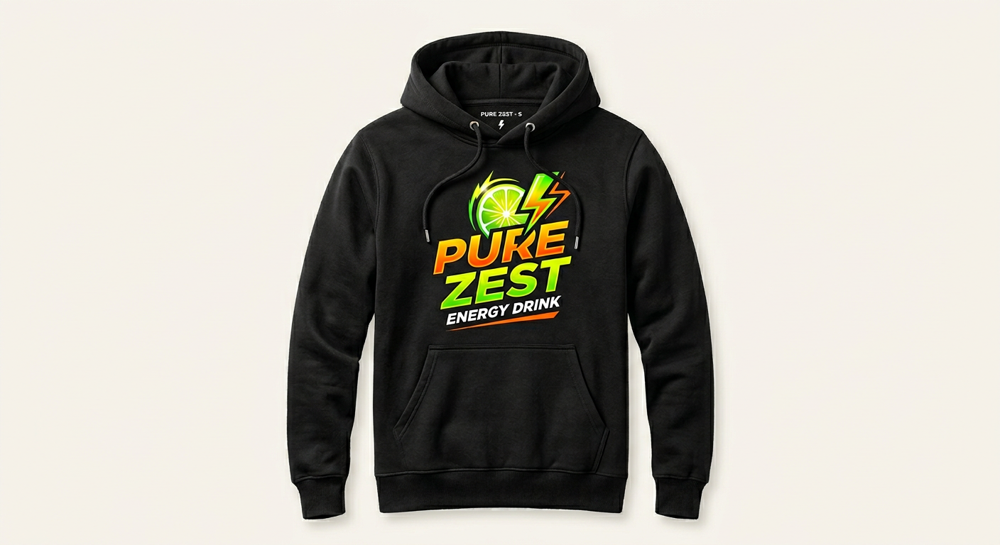

Level Up Your Style—Grab the Gear That Powers Your Passion!
Our merchandise, especially our signature hoodies and branded gadgets, is in high demand among fans and newcomers alike. The unique designs, high-quality materials, and bold logos have made our hoodies a must-have item perfect for showing off your love of the brand while staying comfortable and stylish. Meanwhile, our gadgets are flying off the shelves, thanks to their practical functionality and distinctive energy-inspired branding. Whether it’s portable chargers, water bottles, or other accessories, these items are designed to keep up with an active lifestyle and make a statement wherever you go. With limited quantities and frequent sellouts, our merchandise has quickly become sought-after—turning everyday items into exclusive collectibles. Fans love representing the brand, and new customers are eager to get their hands on these unique pieces. If you want to stand out and stay ahead of the trend, now’s the time to grab our popular hoodies and gadgets before they’re gone!
Hoodies!

Our hoodies have quickly become the talk of the town, and for good reason they’re more than just apparel, they’re an experience. Crafted from ultra-soft, heavyweight fabric, these hoodies wrap you in warmth and comfort that lasts all day long. Customers can’t get enough of the plush interior and the perfect balance between a relaxed fit and sleek style, making them ideal for everything from lounging at home to turning heads on the go. But it’s not just about how they feel it’s about how they make you look and stand out. Featuring bold, vibrant prints and our iconic Pure Zest branding, these hoodies are designed to make a statement. Whether you’re out with friends, at the gym, or heading to a class or event, you’ll catch eyes and spark conversations. The attention to detail, from reinforced stitching to high-quality drawstrings and kangaroo pockets, ensures these hoodies don’t just look good—they last, even after countless washes. Fans rave about the versatility, too. Layer them up in winter, throw them on during cool summer nights, or make them your go to piece for travel and adventure. They’ve become a staple in wardrobes everywhere because they offer the perfect mix of comfort, durability, and street-ready style. No wonder our hoodies sell out fast! Once people slip one on and feel the difference, they come back for more and often tell their friends. If you haven’t experienced the hype for yourself, now’s your chance. Get ready to fall in love with your new favorite hoodie the one you’ll reach for, day after day, and never want to take off.